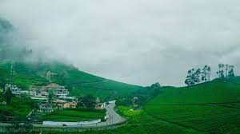

üòçÔ∏èOotyüòçÔ∏è
- most popular hill stations of India, it has Nilgiris, the 'Blue Mountains', in its background.
- The hill town of Ooty, discovered by a British Collector, John Sullivan, was once a summer resort and weekend getaway for the Madra residency, during the colonial times in the 19th century.
- Located at an altitude of 2,240 meters above sea level, it has a number of popular tourist attractions to boast of.
- One of the major attraction is its popular tea estates. This hill station in Tamil Nadu is nestled in the Nilgiri ranges of Snowdon, Club Hill, Doddabetta as well as Elk Hill.
- One of the most well-known hill stations in the Southern part of South India, is visited by a large number of local as well as foreign tourists.
- The best time to visit ooty is from October to June.The Indian Rupee is the official currency in Ooty. An Indian Rupee is made up of 100 paise and have note denominations of Rs 5, 10, 20, 50, 100, 500 and 1000.
- The coins are in denominations of Rs 1, 2, 5 and 10 paise. ATM's are available all around Ooty and most foreign cards are also accepted. In the case of Currency exchange, you can take the services of banks where you can avail the best rates. However, most of the hotels also have an exchange desk.